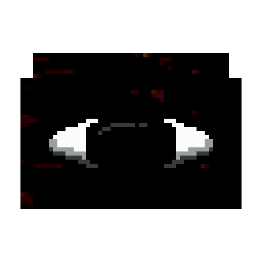

Sinner Land
>> Temperature: >MOSTLY_COLD;
>> ClimateDownfall: >RARELLY_OFTEN;
>> Civilization: >NONE;
>> DangerLevel: >3.14/5;

DESCRIPTION
This area is flooded with black colors, a purple mist, and reddish colors in the case of water (surely referring to blood). This area is not natural and is considered a parasite. It also has the ability to exaggerate the fear of those who visit it, as if it wanted to keep you in constant tension.

ORIGIN
There are no reports or origins of this land; it is a completely new concept for us. The closest approximation to its origin is when the entity "Sinber" decides to water a Troubledgaze, resulting in this land; that is the only origin we currently know. Some rumors associate this biome with "Sinner Apples" or "Stalker Gloomstalks".

VEGETATION
The vegetation consists of "Sinned Moss," "Corrupted Grass," "Corruptles," and in some cases "Troubledgaze," the latter being the plant Sinber uses to sprout these biomes. What's more, if you fertilize within this area, "Smiley Buds" may sprout.

Not only that, but we've also discovered that when we fertilize these areas with bone meal, there's a small chance that two plants we've never seen before will sprout: the "Pelletblinds," which are monochromatic flowers with faces. These don't have anything special about them, but their name (thanks to another Sinber label he stole from a bazaar this time) is a reference to "color blindness"; despite that, they're just "c00t," and that's it.
Then there are the "Begfate," which appear to be an algorithmically distorted version of the "Cherossom," since they bear no fruit as such but rather an apparently human skull through which their tentacles navigate from the bottom until they find an exit.

Finally, we have the "invasive" species, with the "Ghostflow Orchid" being the most peaceful within this class; it simply sprouts among the "Sinned Logs" and generates its own nutrients just to stay alive.
On the other hand, the "Raffleshade Bloom" is a ruthless parasite; it uses the "empty roses" as vessels to slowly drain all their nutrients. Once it has done so, it fully blooms. An interesting fact about this flower is that it has a very short life cycle, gradually deteriorating and dying over time. However, the only thing that dies is the "flower"; the stem continues to produce pollen in the hope of spreading its infestation further. The inside of the flower is dark, and it is not entirely known what lies within, as it emits a completely unbearable stench of rotting flesh.

RESEARCH ADVANCES
We haven't discovered much about this area, but we have gathered quite a bit of information about Sinber's playful behavior. We have discovered that he often places traps with a price tag scratched out with a marker and text written in whiteout that says, "Human Trap!" "Made by Sinber."

Here we can see him placing one of his traps while knowing that we see him.
We have also discovered that every time Sinber disappears, it has the ability to release a strange essence known as "Sinessence," which has been fused with things like "Hornbranch," as we saw in Ominous Valley, and with "Mystical Reinforcers" to create an anchor with a name inscribed on it called "HIS anchor." It has the face of a mythological creature, but its function is unknown; all we know is that Sinber seems to reject it.

MUSIC
This track will randomly play while being inside the biome: |
KNOWN THREATS
THE FALLEN WRITTER

This creature is described in the most widely accepted theory as a grotesquely deformed being, with dark colors resembling rotting flesh and blood, multiple eyes scattered across its body, a "Glowshroom" on its back (the purpose of which is unknown), and a massive skeletal arm. Most people consider it a myth, while others claim to have seen it waving at them from a distance, completely convinced.
At the moment, we don't know 100% what this creature's behavior might be or if it's acting under a facade; that said, keep in mind that, according to the document, "Its behavior is passive because everything proceeds as written," so keep things in order... We don't want any more problems on top of the ones we already have.